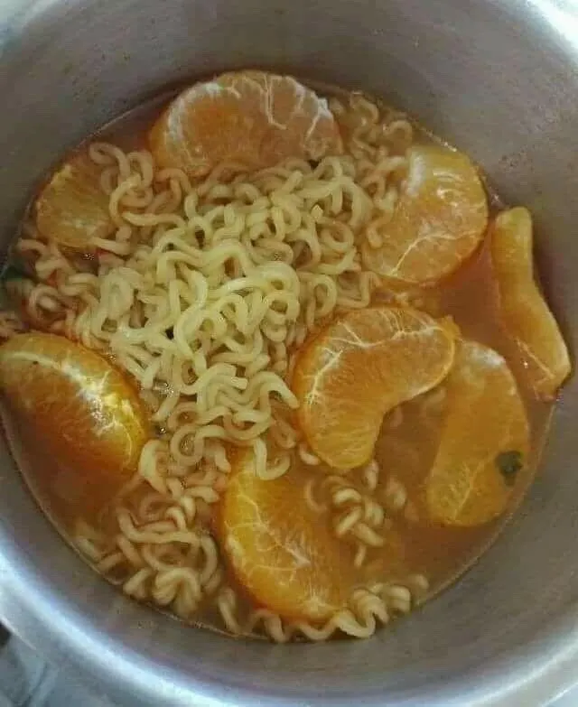

Miojo Pokan

Miojo com tempero de pozinho? Não, isso dá câncer!
Náusea é melhor, não concorda?
Você vai precisar de:
- Um pacote de miojo da Turma da Mônica (se é da Mônica, faz bem)
- Uma tangerina/bergamota/mexirica/pokan/robson
- Água
- Pacotinho de tempero do miojo
Comofas?
- Cozinhe o miojo
- Descasque e esprema o suco do Robson no miojo
- Segure a ânsia de vômito e corra pro banheiro.
- Jogue o pozinho do tempero no café e beba de uma vez
- Peça um iFood.
Início